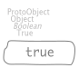
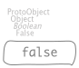
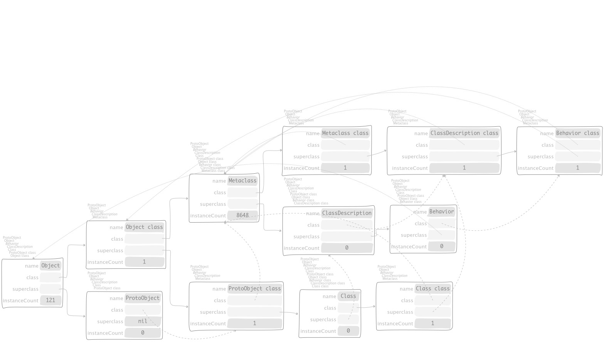

1. Object model¶
1.1. An Object, simply¶
"EssentialsObjectTest, protocol tests"
testInspectObject
^ self exportSlotsGraphOf: Object new

1.2. nil, even more simpler¶
"EssentialsObjectTest, protocol tests"
testInspectNil
^ self exportSlotsGraphOf: nil

1.3. true and false¶
On one hand, truthness is encoded by,
"EssentialsObjectTest, protocol tests"
testInspectTrue
^ self
exportSlotsGraphOf: true
slotDescriptorsContext:
(CTSlotDescriptorsVisitor new collect: [ :aDescriptor |
aDescriptor inline: false ])

On the other hand, falsehood is encoded by,
"EssentialsObjectTest, protocol tests"
testInspectFalse
^ self
exportSlotsGraphOf: false
slotDescriptorsContext:
(CTSlotDescriptorsVisitor new collect: [ :aDescriptor |
aDescriptor inline: false ])

1.4. Object class and its superclasses¶
"EssentialsObjectTest, protocol tests"
testInspectObjectModel
^ self exportSlotsGraphOf: Object
